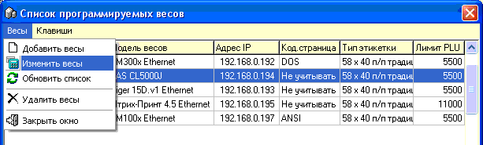
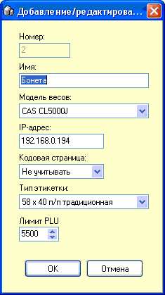

В верхней части окна находится список весов,
которые находятся в магазине.
При нажатии на конкретные весы в этом списке, в
нижней части окна будут отображаться отбираемые к программированию в них
товары, согласно параметров, установленных в средней части окна.
Меню "Весы" отвечает за работу с этими
записями:

Для добавления и изменения весов появляется
следующее окно (рассмотрим подробнее признаки весов, которые нужно
заполнить):

Номер - присваивается автоматически.
Имя - максимально 35 символов, обычно дают
описательное название по типу товара или местонахождению весов.
Модель весов - в программе
поддерживаются 5 моделей весов (DIGI SM300/SM500, DIGI SM100, ШтрихМ 4.5,
Mettler Toledo Tiger15D, CAS CL5000J), одновременно могут быть добавлены и
использоваться различные модели весов разных производителей. Работа с
весами только по Ethernet, что обеспечивает наиболее быстрое программирование
товаров в весы.
IP-адрес - укажите адрес по протоколу TCP/IP,
который указан в весах.
Кодовая страница - выберите подходящий для ваших
весов вариант, когда кириллический текст отображается на этикетке корректно.
Доступно 3 варианта: "не учитывать", DOS, ANSI.
Тип этикетки - в 99% случаев используется первый
вариант - размер 58х40, п/п (препринт - синяя разграфленая). Редко, для тех
весов, что поддерживают эту функцию, используется 58х60 большая этикетка с
печатью ингредиентов - из чего состоит, например, салат.
Лимит PLU - максимальное количество товаров,
которое можно запрограммировать в весы. Зависит от объема памяти весов.
Примерно, для весов с 1Мб памяти - 5500...7000 товаров, для 2Мб - до
15000.